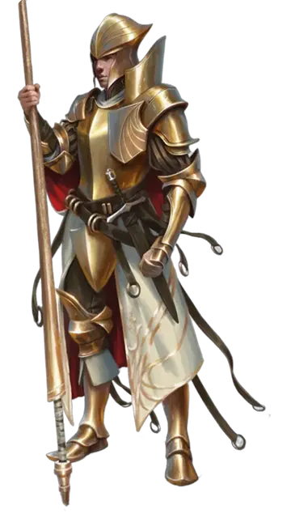

Всадник кавалерии грифонов
Griffon Cavalry Rider
Средний Гуманоид (Любая раса), любое мировоззрение

Класс Доспеха 17 (полулаты)
Хиты 58 (9к8 + 18)
Скорость 30 футов
| мод | спас | ||
|---|---|---|---|
| СИЛ | 14 | +2 | +2 |
| ЛОВ | 15 | +2 | +2 |
| ТЕЛ | 14 | +2 | +2 |
| мод | спас | ||
|---|---|---|---|
| ИНТ | 10 | +0 | +0 |
| МДР | 12 | +1 | +1 |
| ХАР | 10 | +0 | +0 |
Навыки Атлетика +4, Восприятие +3, Уход за животными +3
Чувства пассивное Восприятие 13
Опасность 2 (450 опыта)
Бонус мастерства +2
Особенности
Языки. Любой один язык (обычно Общий).
Действия
Длинное копьё. Рукопашная атака оружием: +4 к попаданию (с помехой если цель в 5 фт.), досягаемость 10 фт., одна цель. Попадание: 8 (1к12 + 2) колющего урона или 11 (1к12 + 5) колющего урона если находится на скакуне.
Кинжал. Рукопашная или дальнобойная атака оружием: +4 к попаданию, досягаемость 5 футов или дистанция 20/60 футов, одна цель. Попадание: 4 (1к4 + 2) колющего урона.
Лёгкий арбалет. Дальнобойная атака оружием: +4 к попаданию, дистанция 80/320 футов, одна цель. Попадание: 6 (1к8 + 2) колющего урона.
Реакции
Падение пёрышком. Всадник носит магическое кольцо, с помощью которого он может реакцией наложить на себя заклинание падение пёрышком при падении. После накладывания заклинания кольцо становится немагическим.
Описание
Городская стража
Городская стража — это армия Глубоководья. Её задача — защищать стены и ворота города, правительственные здания, гавань и чиновников. Стража также патрулирует дороги на Амфел, Голденфилдс и Даггерфорд.
Звания Городской гвардии
У служащих Городской стражи следующие звания, от низшего к высшему:
- Рядовой.
- Сержант (армар).
- Лейтенант (цивилар).
- Капитан (старший цивилар).
Множество руководящих должностей, некоторые многолетние (сенешаль замка Глубоководья, защитник порта, начальник северных башен, начальник южных башен, главный оружейник). некоторые заполняются только в военное время (десница лордов и чемпион лордов).
Хранитель глубоководья
В данный момент хранитель Глубоководья— Эльминстер, который подчиняется Явному лорду Лейраль Сербряннорукая.
Кавалерия Грифонов — особая ветвь Городской стражи, члены которой — солдаты-ветераны, обученные летать верхом на грифонах.